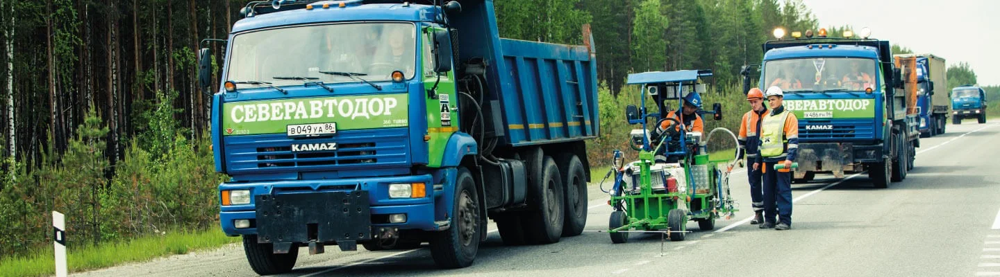
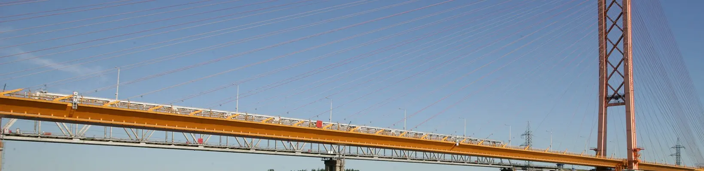

Акционерное общество «Государственная компания «Северавтодор» · Сургут
Все виды дорожных работ в Югре — летом и зимой
Генеральный подрядчик по содержанию территориальных, федеральных и муниципальных автодорог, мостов, ледовых переправ и автозимников Ханты-Мансийского автономного округа — Югры.

- 3296 км
- дорог в работе
- 2473,85 км
- автозимников и ледовых переправ
- 8
- филиалов по округу
Что делает «Северавтодор»
Дороги, мосты, зимники и всё, что нужно, чтобы они работали: свой асфальт, свои знаки, своя лаборатория.
-
Содержание дорог и мостов
Генеральный подрядчик по содержанию территориальных, федеральных и промысловых автодорог, мостов и мостовых сооружений.
-
Автозимники и ледовые переправы
Устройство и содержание зимних дорог и ледовых переправ Ханты-Мансийского автономного округа — Югры. Справочник направлений
-
Асфальтобетонные заводы
20 асфальтобетонных установок, производительность 1130 т в час, 1,8 млн т смеси в год.
-
Цех дорожных знаков
Дорожные знаки, аншлаги, средства ограждения, информационные и рекламные щиты. В 2019 году — 125 000 единиц продукции. Интернет-магазин знаков
-
Сеть ДРП
Проектирование, строительство и содержание дорожно-ремонтных пунктов по концепции развития сети на территории ХМАО — Югры.
-
Строительство, лаборатория, проектирование
Капитальный ремонт и реконструкция дорог, строительство зданий и сооружений, центральная лаборатория и проектная группа.
Сезон зимника
Как живёт зимняя дорога — по сообщениям ленты «Ситуация на дорогах» за сезон 2024/25.
- Река встаёт
Зимой реки Югры становятся частью дорожной сети. «Северавтодор» — генеральный подрядчик по устройству и содержанию зимних дорог и ледовых переправ.
- Зимник открыт
В работе компании 2473,85 км автозимников и ледовых переправ — 42,87 % всей протяжённости обслуживаемых дорог за 2023 год.
- Оттепель — ограничения массы
С 5 февраля по 11 марта 2025 года лента сообщала об ограничениях для машин массой более 3, 5, 10 и 15 т на отдельных зимниках.
- Весной дорогу закрывают
С 27 марта по 10 апреля 2025 года зимники закрывали по районам: «в связи с наступлением устойчивых положительных температур».
Это архив прошлого сезона, а не текущий статус дорог. Актуально — по телефону диспетчерской (3462) 22-48-49.
Зимники и переправы: справочник направлений
Выберите район и направление: схема покажет, через какие реки идут ледовые переправы, а карточка — что сайт сообщал о нём в прошлом сезоне и куда звонить сейчас.
Условная схема: пункты по порядку в названии зимника, переправы — без привязки к километрам.
- Тип
- Ледовые переправы
- Сезон 2024/25 на сайте
Актуальный статус — по телефону диспетчерской. На сайте нет сообщений текущего сезона.
(3462) 22-48-49Одно из крупнейших предприятий дорожного хозяйства Югры
На компании — безопасность движения в сети федеральных, региональных и межмуниципальных дорог общего пользования. Короткое лето и непредсказуемая зима диктуют жёсткие правила работ.
- 8
- филиалов
- 3296 км
- дорог
- 1025
- единиц техники, в том числе 16 асфальтоукладочных комплексов
- 26
- дорожно-ремонтных пунктов
- 1532
- человека
- Региональные и межмуниципальные 2872,56 км
- Автозимники 2473,85 км
- Ведомственные и частные 423,48 км
Миссия
- Обеспечить сохранность жизни и здоровья людей на автомобильных дорогах
- Обеспечить сохранность имущества пользователей и собственников дорог
- Повысить качество жизни людей, используя высокие стандарты в дорожной деятельности
- Сделать автомобильные дороги безопасными и комфортными
Северный широтный коридор, 101–103 км
Капитальный ремонт участка Советский — Ловинское месторождение. Введён в 2020 году: 3,5 км, 4 полосы. Нацпроект «Безопасные и качественные автомобильные дороги».
ДРП «Ульт-Ягун»
Км 62+925 автодороги «Сургут — Нижневартовск». Площадь 2,7 га, здание 2054 м².
ДРП «Междуреченский»
266 км автодороги «Юг». Площадь 8,1 га, здание 838 м².
ДРП «Приобское»
885 км автодороги «Тюмень — Ханты-Мансийск». Площадь 1,3 га, здание 854 м².

Музей моста
Югорский мост — гордость Сургута и Сургутского района. Наследие мостостроителей и дорожников.
- 2110 м
- длина моста
- 149,1 м
- высота пилона
- 26 км
- общая длина вант
Генеральный директорТудачков Роман Валерьевич
Главный инженерНюдь Артур Сергеевич
Раскрытие информациипо приказу Минэкономразвития № 208 для обществ с акциями в государственной собственности
Работа в «Северавтодоре»
Вакансии открыты в Сургуте, Нижневартовске, Нефтеюганске, Урае, Белоярском, Нягани, Ханты-Мансийске, Югорске, Радужном, Пойковском, Фёдоровском и Лянторе.
- Мастер участка (дорожного)
- Начальник участка
- Ведущий инженер ПТО
- Машинист автогрейдера
- Машинист бульдозера
- Машинист экскаватора
- Машинист крана
- Машинист автовышки
- Водитель комбинированной дорожной машины
- Водитель погрузчика
- Тракторист
- Дорожный рабочий
- Слесарь по ремонту автомобилей
106 039 ₽среднемесячная зарплата в 2023 году
СтудентамЦелевое обучение, кадровый резерв, партнёрство с ТГАСУ и СибАДИ
Контакты
- Отдел эксплуатации дорог22-51-84oed@severavtodor.ru
- Отдел закупок22-56-54oz@severavtodor.ru
- Центральная лаборатория22-57-44lab@severavtodor.ru
- Проектная группа22-52-23pg@severavtodor.ru